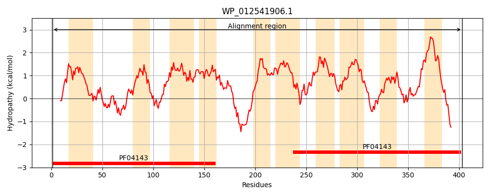
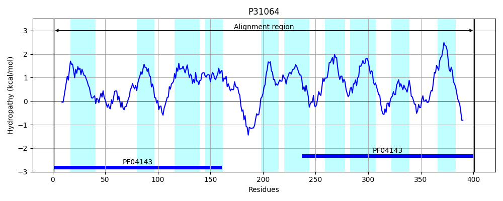
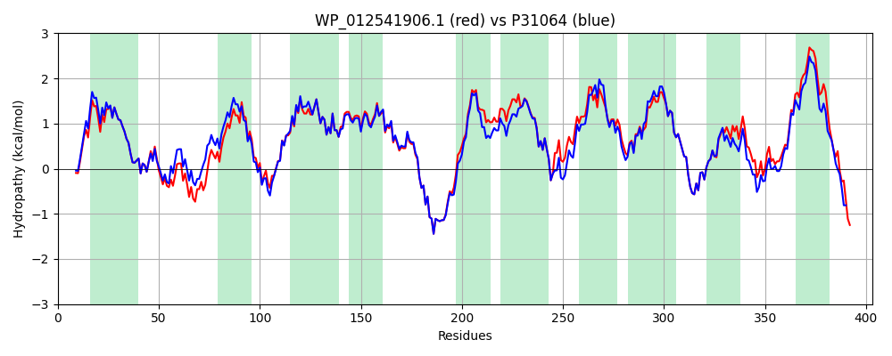

Hit Accession: P31064
Hit TCID: 9.B.102.1.1
Hit Description: gnl|BL_ORD_ID|9743 gnl|TC-DB|P31064|9.B.102.1.1 UPF0394 inner membrane protein yedE OS=Escherichia coli (strain K12) GN=yedE PE=1 SV=1
Mach Len: 403
e:0.000000
Query TMS Count : 10
Hit TMS Count: 10
TMS-Overlap Score: 10.500000
Predicted Substrates:CHEBI:9091;selenium atom
BLAST Alignment:
Score: 1836 , Bit scores: 711 bits, E-value: 0.0e+00, Alignment length: 403, Percentage identity: 84
Query: 1 MTWQSFKQAWLIRFWSPVPAVIAAGILSTYYFGITGTFWAVTGEFTRWGGQLLQLLGVHSEQWGYYQLIHLEGTPLTRIDGRMIIGMFGGCLAAALWANNVKLRFPRSRIRIVQAVAGGIIAGFGARLAMGCNLAAFFTGIPQFSLHAWLFAIATAIGSWFGARFTLLPLFRIPVKMQKVSAASPLTQKPQQARRRFRLGMVIFFAMIGWGLLTAADHPALGLAMLFGIGFGLLIERAQICFTSAFRDMWITGRTVMAKAIIFGMAASAIGIFSYVQLGMAPKIMWAGPNAAIGGLLFGFGIVLAGGCETGWMYRAVEGQVHYWWVGLGNVIGSTLLAWCWDDIAAPLATHWQKINLLNAFGPFGGLLATYLLLLIALLLVIAWERHFFRRQSTAVRTVKESA 403
M+WQ FK AWLI+FW+P+PAVIAAGILSTYYFGITGTFWAVTGEFTRWGGQLLQL GVH+E+WGY+++IHLEG+PLTRIDG MI+GMFGGC AAALWANNVKLR PRSRIRI+QA+ GGIIAGFGARLAMGCNLAAFFTGIPQFSLHAW FAIATAIGSWFGARFTLLP+FRIPVKMQKVSAASPLTQKP QARRRFRLGM++FF M+GW LLTA + P LGLAMLFG+GFGLLIERAQICFTSAFRDMWITGRT MAKAII GMA SAIGIFSYVQLG+ PKIMWAGPNA IGGLLFGFGIVLAGGCETGWMYRAVEGQVHYWWVGLGNVIGST+LA+ WDD A LAT W KINLL FGP GGLL TYLLL AL+L+I WE+ FFRR A +T KE A
Sbjct: 1 MSWQQFKHAWLIKFWAPIPAVIAAGILSTYYFGITGTFWAVTGEFTRWGGQLLQLFGVHAEEWGYFKIIHLEGSPLTRIDGMMILGMFGGCFAAALWANNVKLRMPRSRIRIMQAIIGGIIAGFGARLAMGCNLAAFFTGIPQFSLHAWFFAIATAIGSWFGARFTLLPIFRIPVKMQKVSAASPLTQKPDQARRRFRLGMLVFFGMLGWALLTAMNQPKLGLAMLFGVGFGLLIERAQICFTSAFRDMWITGRTHMAKAIIIGMAVSAIGIFSYVQLGVEPKIMWAGPNAVIGGLLFGFGIVLAGGCETGWMYRAVEGQVHYWWVGLGNVIGSTILAYYWDDFAPALATDWDKINLLKTFGPMGGLLVTYLLLFAALMLIIGWEKRFFRR--AAPQTAKEIA 401 | Protein Hydropathy Plots: |
|---|
|  |  |
Pairwise Alignment-Hydropathy Plot:
|
|---|
|  |